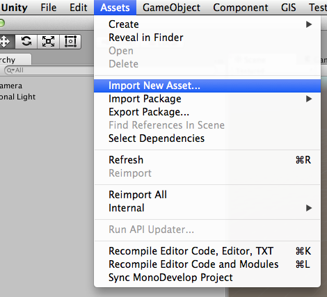

Importing Objects From SketchUp
概述
SketchUp is one of the commonly used software for architecture modeling. To use a SketchUp model for visualisation in Unity, user will previously need to convert it to an intermediate format which Unity supports and use the converted format in Unity.
To overcome this problem, Unity now supports importing SketchUp file directly into Unity without the need for conversion and allowing user to access certain properties within the SketchUp file within Unity which is not previously possible.
Glossary of Terms
| Term | 定义 |
|---|---|
| Node | A node is a generalisation of Entity, Group, and Component Instance in SketchUp. |
| Geo Coordinate | A coordinate system to identify a position on geographic system. |
Importing SketchUp Model
Importing a SketchUp file into Unity is similar to importing a 3D model that is supported by Unity (eg FBX). There are 3 ways you can import a SketchUp file
Click on Assets -> Import New Asset.. from the menu bar 
Drag and drop the file into the Project window
‘Import New Asset…’ via Project window’s context menu
Once the model is imported, you can place then use the model in your scene by placing it into your scene. The hierarchy of the SketchUp file is maintain via Unity’s GameObject hierarchy.
Materials and Textures
When the model is imported, the materials and textures for the model are imported into 2 separate folders relative to where the file is imported to; namely ‘Material’ for the material of the model and ‘Texture’ for the textures from the model.
The textures imported from the SketchUp file will maintain its original filename when it is imported into Unity.
The materials imported from the SketchUp file will have the SketchUp file name prefixed into the material’s name.
Hidden Geometries
Unity is able to determine if a node should be imported by it’s visibility setting in the SketchUp file.
If a node is set to hidden when it is last saved in the SketchUp file, Unity will not import the node.
Selective Node Import
Imagine you have a SketchUp file which contains a library of chairs and you only want to import a few of them for your scene. In this case, it is possible to only import certain objects from your SketchUp file. To do this, hold the ‘option’ key in Mac or ‘alt’ in Windows when you are importing your SketchUp file.
By doing so, a dialog box will appear for you to select what to import:
This dialog shows you the groups and component instances that are in the file. This also allows you to select which group or component instance to import into Unity3D.
Once you have make your selection, click on the OK button and only the nodes that are selected will be imported.
Front and Back Face
By default, Unity will only import the front facing polygons to reduce polygon counts. The exception is that if the back facing polygons have material assigned in SketchUp.
If you would like to have back facing polygons generated, you can specify this in the SketchUp Model Inspector.
Scale Conversion
Unity imports the SketchUp file and scales the model to 1 meter (0.0254 inches) to 1 unit length in Unity by default.
You can change the import scale in the SketchUp Model Inspector.

SketchUp Component Definition, Instance and Group
Unity uses the same concept when generating meshes for SketchUp’s Component Definition, Component Instance and Group:
Component Definition and Group will be generated into meshes. The meshes will than be instanced as GameObjects so that it can be place into the scene.
SketchUp Reference
SketchUp Model Inspector
In the inspector of a imported SketchUp model, you will find several options. Any changes made in the inspector will require you to click on the ‘Apply’ button of the inspector to have the changes take effect.
SketchUp Scene Camera
Unity extracts and stores SketchUp file’s camera data for each scene in the file so that it can be used later. Refer to the API reference on how to retrieve the data.
Geo Coordinates
Unity extracts and stores the geo coordinates of the SketchUp file (if available). These values can be view via the SketchUp Model Inspector or refer to the API reference on how to retrieve the data.
Demo Package
The demo package demonstrates how to extract SketchUp scene camera and geo coordinates that was imported by Unity.
Demo package content:
- A sample SketchUp file
- Textures and Materials imported from the SketchUp file
- SketchUpFileProperties.cs
- Runtime component to store SketchUp file data
- SketchUpFilePropertiesInspector.cs
- Inspector for SketchUpFileProperties
- Extract data from SketchUpImporter and store them into SketchUpFileProperties
Limitations
- GIF textures are not supported
- Lines are not imported
- 2D components (Text, dimensions) are not supported
- Dynamic components are not supported
- Attributes are not imported into Unity
- SketchUp Layers are not imported
- SketchUp Shadow settings are not imported
- SketchUp Drawing Styles are not imported
- SketchUp Section Planes are not imported
- SketchUp Animation settings are not imported
- Limited SketchUp Scenes data are imported